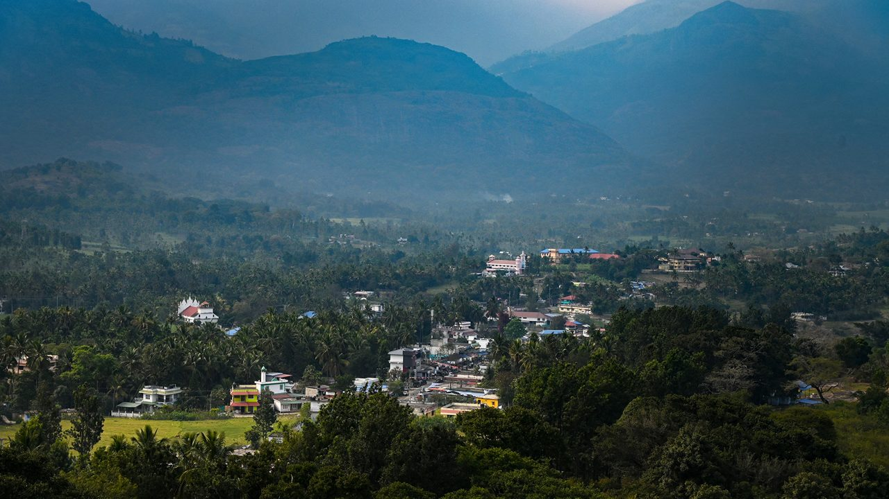
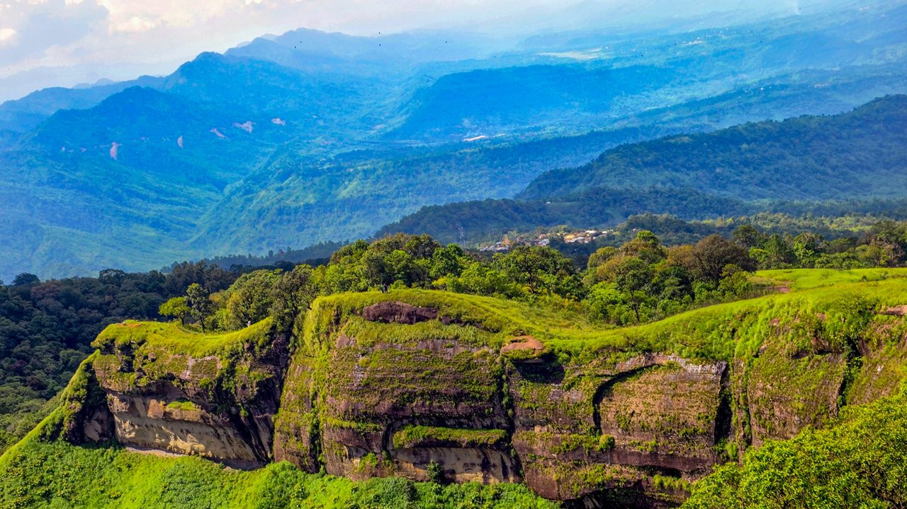

Kanthallor
Kaashmir of Kerala
Sarmoli
The enchanting Himalayan haven

Reiek
The home of majestic misty mountain
Kaashmir of Kerala
The enchanting Himalayan haven
The home of majestic misty mountain
India’s tourism offers a diverse and enriching experience, attracting travelers with its vibrant culture, rich history, natural beauty, and spiritual significance. From the iconic historical landmarks like the Taj Mahal and Qutub Minar to the serene hill stations of Shimla and Darjeeling, India offers something for every type of traveler. Its cuisine, with its bold flavors and regional specialties, is a key highlight, while its religious and wellness tourism, centered around yoga and Ayurveda, draws spiritual seekers. Visitors can explore bustling cities, participate in colorful festivals, or enjoy adventure and eco-tourism activities in its national parks and coastal areas. India’s combination of modern amenities and ancient traditions ensures a truly unforgettable experience for anyone looking to explore its endless attractions.